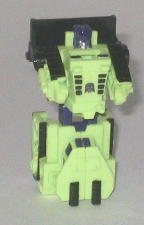
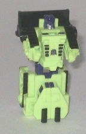

Difficulty of Transformation : Very Easy
Individual Rating : 5.0
Components include
: Bonecrusher,
Buckethead, Hightower, Long Haul, Quickmix, Scavenger (sold seperately)
Individual prices
: $4 (U.S.)
Allegiances
: Decepticon
Size
: Micromasters (i.e., slightly
smaller than Minicons)
Color Schemes
: Light pale green,
black, royal purple, and some silver and light red
Overall Rating
: 5.0
(NOTE: These toys aren't really new molds
but basically re-named, re-packaged reissues of a formerly Japanese-exclusive
Micromaster set-- Sixbuilder-- from the early 1990's. Even though these
toys are sold individually, I'm reviewing them on one page for simplicity's
sake.)
 Bonecrusher
Bonecrusher

Difficulty of Transformation
: Very
Easy
Individual Rating
: 5.0
Bonecrusher is a bulldozer,
and is a pretty typical Micromaster in his construction. His vehicle mode
is top-notch, with great mold and paint detailing. The proportions are
also very realistic, especially for such a small toy, and there's no robot
extras to speak of whatsoever. Bonecrusher's color scheme is a great throwback
to the G1 Constructicons, and this set is obviously supposed to be a new
version of them, both because of the alt modes, color scheme, and most
of the names. True, green, black, and purple aren't exactly the most common
colors for a construction vehicle, but it's such a great color scheme for
Decepticons, I can't particularly say I care. So absolutely no complains
color-wise for any of the toys in this gestalt set, considering that they
all have the same color scheme.
However, one of the
big downsides is that, like most Micromasters, Bonecrusher has a pretty
crummy robot mode. His legs are easily bigger in mass than the rest of
his body, and they're stuck together, so they can't move individually.
His arms have no discernable elbows, and are kind of pudgy. The head has
a very good amount of detailing for being so small, however, and the chest
doesn't stick out. His articulation is also rather bad, as is the case
with all Micromasters; he can move back-and-forth at the shoulders, hips,
and knees, but the hips and knee joints can't move individually since Bonecrusher's
got one big uni-leg.
Bonecrusher comes with
Devastator's waist & upper leg piece.
Bonecrusher is one of
the better Micromaster Constructicons, but he's still got some major proportion
and articulation problems in robot mode, like pretty much any Micromaster.
Love his vehicle mode, though.
 Buckethead
Buckethead
Difficulty of Transformation
: Very
Easy
Individual Rating
: 4.3
Buckethead's vehicle
mode is an earth mover. (Buckethead, by the way, has got to be one of the
goofiest TF names ever... hardly flattering, to say the least...) This
mode is decent, but the robot arms poke out rather obviously at the sides,
which is rather annoying. The window cover the driver's seat area also
isn't painted, but is green like the surrounding plastic, making it rather
hard to find at first. In fact, Buckethead probably has the worst paint
detailing out of any of the Micromaster Constructicons-- he has a few nice
purple paint apps in robot mode, but that's really it. There's no paint
apps used for the vehicle mode. So the only thing the vehicle mode has
got going for it is that the little shovel can move up and down, to move
about a teaspoon of... well, whatever you so desire.
Buckethead's robot mode,
as expected, isn't top-notch, either. The proportions for the legs, chest,
and head are certainly better than on most other Micromasters, but the
arms actually are BEHIND the wheels coming out of his chest, which is a
huge design no-no. Good luck getting Buckethead to fire a rifle, since
he can't move his arms forward much at all. His other articulation is at
the hips and knees, where he can move back and forth-- though, again, he
has a big unileg, so they can't move individually.
Buckethead comes with
Devastator's chest piece.
Buckethead is one of
the worse Constructicons, with sub-par detailing and really, really odd
arms in robot mode. He does make a nice chest for Devastator, but that's
the only real high point he has.
 Hightower
Hightower
Difficulty of Transformation
: Very
Easy
Individual Rating
: 5.2
Hightower's vehicle mode
is a crane, and it's top-notch. Lots of cool mold details, and a decent
amount of paint apps (most of them going towards painting the windows purple).
The proportions are also pretty realistic, with the sole exception of the
crane arm, which is shorter than it would otherwise be for obvious reasons.
Even as short as it is, it's still a little on the fragile side, so be
careful. It's still pretty cool that they put a moving crane arm and hook
on such a small toy, though. The upper back part of the crane can also
rotate around, so the crane arm doesn't always having to be facing towards
the front.
Hightower's robot mode
is pretty basic, but it works, for the most part. His actual body has very
good proportions for a Micromaster, with the lower legs not being TOO much
larger than the upper legs, and the chest not sticking out too much either.
Hightower DOES have the back half of the vehicle mode hanging off his upper
body, though, which does ruin the look a little. Still, it's not nearly
as bad as the designs for, say, Long Haul or Buckethead. And it does give
him a bit more of a "beefed up" look. Plus, I still love how much detailing
is going into these little Micromaster's faces, and Hightower's is no exception--
heck, he's even got the only red paint app on the bunch, and that's only
used for his tiny forehead! Hightower's articulation is average for a Micromaster's--
he can move back-and-forth and the shoulders, hips, and knees. The legs
are held together in such a way that the hips can't move seperately, but
the knees can. So it's a little better than a uni-leg, but not by much.
Hightower comes with
both of Devastator's fist pieces.
Hightower is one of
my favorites of the Micromaster Constructicons, with a great vehicle mode
and a decent robot mode, even if he does have half of this vehicle mode
hanging off his back. But you can't expect TOO much from such a small toy.
 Long
Haul
Long
Haul
Difficulty of Transformation
: Very
Easy
Individual Rating
: 4.3
Long Haul is a dump truck.
Thus mode, while still good, is a little sub-par when compared to the other
Constructicons. The robot feet are pretty obviously sticking out the back
end of the vehicle, and the robot head is somewhat visible, being face-up
right next to the driver's seat as it is. The mold detailing is pretty
good, but there isn't much paint detailing when compared to the other Constructicons,
so it looks a little on the blah side. They're by no means crippling blows
to the toy, but they are noticeable.
In robot mode, Long
Haul is noticeably larger than the other Constructicons-- most of them
only come up to his shoulder. It's because of his overly-long legs-- they're
made up of the back two-thirds of the vehicle mode, and the look rather
mismatched compared with Long Haul's squat, bulky chest and arms. I don't
like his chest structure at all-- the driver's area is on one side of his
head, while there's nothing sticking up on the other side of his head.
It's pretty asymmetrical, and in an odd-looking, imbalanced way. The arms
also can't point straightforward, as they're prohibited from doing so by
the front bumper-- and considering that the toy wouldn't have lost any
play value by taking off those two skinny ends of the bumper, thus preventing
this movement restriction, it's pretty annoying. Long Haul has pretty average
movement for a Micromaster- he can move back-and-forth and the shoulders,
knees, and hips, just like the other Constructicons. And he has the usual
uni-leg, which prevents individual leg movement in the knees and hips.
Long Haul comes with
one of Devastator's foot pieces.
Long Haul is one of
my least favorite Constructicons, because of his extremely odd proportions
in robot mode and his couple of semi-obvious robot extras in vehicle mode.
Still, he's needed to complete the gestalt, of course, so you need to get
him if you want to form Devastator.
 Quickmix
Quickmix
Difficulty of Transformation
: Very
Easy
Individual Rating
: 4.6
Quickmix's vehicle mode
is a cement mixer. As expected, this mode is pretty good overall-- the
proportions are a little "squashed" to keep him the same length as Long
Haul, since they both form a leg of Devastator, but that's really my only
complain with the mode. The mold and paint detailing is pretty good (though
I question making the headlights black, of all colors...), and there's
no robot extras to speak of. So no complaints here, folks.
Quickmix's robot mode,
though, has pretty odd proportions. The hands are very thin, stick-like,
and have no discernable elbows, for one. The legs are also a bit too wide
and blocky-- not as bad as Bonecrusher's, but worse than, say, Hightower's.
The front half of the vehicle mode also just ends up on Quickmix's back,
and his head is really molded faaar into the interior, to the point where
it's rather hard to see without holding him up to the light. It doesn't
help that the design on his forehead looks like two big, goofy looking
optics, whereas his real, normal-sized optics are hard to see because of
how the head is eternally enveloped by shadow. His articulation is pretty
much the same as the other Constructicons-- he can move back-and-forth
at the shoulders, hips, and knees, but he has a uni-leg, so his hips and
knees can't move individually.
Quickmix comes with
one of Devastator's foot pieces.
Quickmix is about middle-of-the-line
as far as the Micromaster Constructicons go. Nice vehicle mode, even if
is a bit squashed, but his proportions in robot mode are a bit out of whack,
and his head is a bit hard to see.
 Scavenger
Scavenger
Difficulty of Transformation
: Very
Easy
Individual Rating
: 5.2
Scavenger's vehicle mode
is an excavator. My comments on Scavenger are pretty much the same as they
were on Hightower, though, since his design is pretty much a carbon copy
of the latter's. On, the mold details and some of the paint apps are different,
but that's it. The articulation, proportions, transformation, and the like
are identical. The design for the robot chest and head are a bit bulkier
and more asymmetrical than Hightower's, to make his robot mode look more
individualistic, too. Not really much has changed, though.
Scavenger comes with
Devastator's gun and head piece.
Scavenger is another
one of my favorite Micromaster Constructicons, and for pretty much the
same reasons as Hightower, given that their designs are identical. He still
has that darned backpack in robot mode, though, and his articulation isn't
too great, but he's still definitely an above-average Micromaster.
 Constructicon
Devastator
Constructicon
Devastator
Difficulty of Transformation
: Medium
Individual Rating
: 6.6
Since Devastator has
a structure similar to the previous Micromaster gestalt,
Defensor
,
it makes sense to do several comparisons between the two. (For the record,
Hightower and Scavenger form the arms; Quickmix and Long Haul form the
legs; Buckethead forms the chest; and Bonecrusher is just stuck on the
butt, contributing nothing useful to the gestalt at all.) For one, I like
the unified color scheme a lot more on Devastator than the disjointed scheme
on Defensor, as it really helps establish him more as his own robot mode
and not just a bunch of vehicles slammed together. Many of the connector
parts are the exact same as they were on Defensor's, just different colors--
the gun, feet, chest, and waist pieces are all the same. The head has been
changed to a different one that resembles G1 Devastator's with a few extra
head crests. The hands have also been changed, and thank goodness, they
fit into the gestalt arm 'cons much, MUCH more snugly than on Defensor.
Because of the construction of Hightower and Scavenger, Devastator can
also move his arms from side-to-side at the shoulders in addition to back-and-forth,
so those little wings on the side of his chest piece don't interfere much
with arm movement. Though, like Defensor, Devastator can only move at the
arms and head, so he's not exactly the most poseable of 'bots.
I still think it's rather
cheap that Devastator has all these parts in gestalt mode that aren't used
in the individual robot modes, but at least they form a jet. Because of
the similarity of Devastator's gestalt parts to Defensor's, the jets are
essentially the same, minus the color scheme, so my comments on Defensor
in that respect also apply to Devastator. I do think that the blue used
on Defensor works much better for a jet than the purple and green on Devastator,
however.
Like pretty much all of the Micromasters, the Micromaster Constructicons have pretty good vehicle modes, but rather misproportioned, odd robot modes. The gestalt form is quite a bit better than Defensor, and I do love the unified color schemes, but asking about $25 U.S. total for what basically amounts to a deluxe-sized toy is still a bit much, even is that toy splits into six different robots. Still, if you like little Transformers, or Constructicons, than I'd recommend it-- otherwise, though, your money is better spent elsewhere.
No Stats
Review by Beastbot